← 返回阅读库 · 原论文目录
论文讲解阅读文档 · 表征学习 · v154
Broaden Your Views for Self-Supervised Video Learning[2103.16559]
视频时长 00:07:59；讲解文字 3,692 字符；提取讲解画面 35 张。按视频原顺序阅读，每段文字保留时间戳。
文字来自整段视频的自动语音转写，按自然停顿分段，并与 PPT / 论文页面 / 演示画面对齐。未将讲解压缩为摘要；术语、数字和口述公式请结合画面及原论文核对。 阅读稿已校正规范部分明确术语误识别；原始逐字稿和每处修改记录另行保留。
讲解画面为源视频截图（640×360），不是可编辑 PPT 文件。全片按每秒 2 帧扫描内容变化，逐步展开页保留；连续动画保留代表画面。清晰度受源视频限制。
下载完整资料包 · 含离线 HTML、PDF、Word、全部 PPT 画面和字幕。
原论文与材料
Broaden Your Views for Self-Supervised Video Learning · 下载完整 PDF（15 页）
按时间阅读
00:00:00–00:00:15 · 画面 001
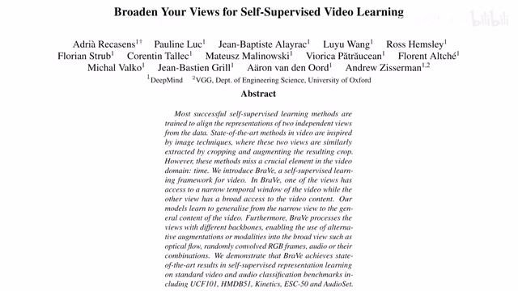
00:00:00–00:00:15 · 画面 001大家好啊，今天我们来快速说一篇论文，Broaden your views for self-supervised video learning。这篇呢估计是今年投 CVPR 的，原理呢也是非常简单，标题呢你也看到了，那么直接来到他的这个介绍。那我们之前介绍过这个 videomoco，那 videomoco 的核心呢是通过训练一个 frame dropper。
00:00:15–00:01:19 · 画面 002
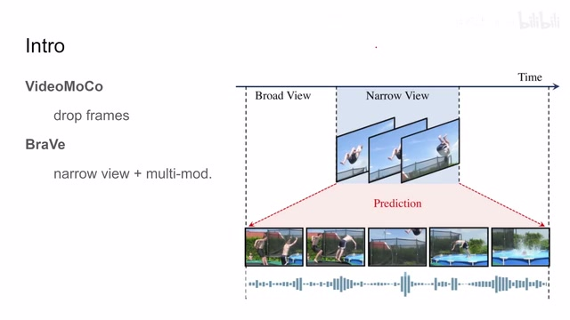
00:00:15–00:01:19 · 画面 002它有选择性的把视频中的一些帧去剔除,通过这种方式来构建一个新的 view。在本文提出这个 BraVe 的中,作者提出的是使用这个 narrow view,配合这个 broad view,甚至是 multi-modality 的这个 broad view,来做我们的 contrast learning。那么首先我们先了解一个概念,什么是 narrow view,什么是 broad view。这里作者说我们的一个视频中,我切出非常短的一个时间的 clip,它形成一个 narrow view。
那如果找到一个时间比较长的 clip，它呢叫做 broad view。那么这里呢很自然的我们就可以假设，因为这个 narrow view 和 broad view 都是来自于同一个视频的，所以呢他们应该具有一定的 evidence，他们有一定的 consistency。所以呢他们可以被用来监督这个 contrastive learning。那这个呢是本文最核心的这个思想。那么当然了，因为这是 video 嘛，你可以把它拓展到这个 multimodality 上面。那么我们继续来看作者的实现啊。
00:01:19–00:02:24 · 画面 003
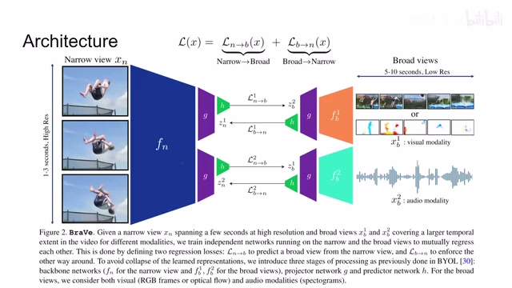
00:01:19–00:02:24 · 画面 003这里呢我们左边有这个 narrow view，右边呢有不同 modality 的这个 broad views。那还是他们有各自的 backbone，这里的 fnn 代表 narrow 嘛，给它提出一个 representation 出来。这里的 fb 呢就是 broad view。那右上角呢表示不同的 broad view，它可能来自不同的 modality，它也可能来自不同的 clips。这个呢我们在后面的配置中呢会看到。那我们的视频经过这个 encoder 提出 representation，来过这个 projector，过这个 predictor。那之后呢我们就可以做这个 contrastive loss。这个 contrastive loss 其实非常简单，就是用的 BYOL。
里面的这个 vector normalized 之后，然后做了这个 MSE 或者你可以说它是一种 cosine similarity。那这边呢同样的像 BYOL 一样，我可以预测从 narrow 到 broad，也可以预测从 broad 到 narrow。那么这样两个 loss 呢，它两个这个网络结构是不对称的，但是呢我们的这个输入是可以相互对称的。那这里呢注意到我们这个 G。
那这里呢我们需要注意的这个 projector 和这个 predictor，它呢是在所有的网络中所有的 modality 当中都是通用的，共用一套参数的。那这边呢不论是我们的 broad view 的不同的 modality，还是呢我们的这个 narrow view，它的这个 encoder 呢都是各自不同的。那这种配置呢是 empirically 作者经过实验说这个这种配置呢效果是最好的。
00:02:24–00:03:50 · 画面 004
00:02:24–00:03:50 · 画面 004那回到这边这个 loss 我们来看到说对于一个 narrow view 对于一个 broad view 来说他们这个 BYOL 式的这个 losssg 表示这个 stop gradient 对吧只传递一支梯度这个呢是非常好理解那你当然可以很轻松的把它拓展到很多个这个 broad views 这里呢 narrow view 始终只有一个啊但是 broad views 你拓展很多个比如说你一个视频里面截取不同的这个视频的片段截很多次对吧但是你每次做呢还是一样做，那包括你甚至有不同的 modality 对吧，你用不同的 modality 呢提出 feature 来，一样的还是只跟这一个这个 narrow view 来做比对。那么当然他们这个位置是可以互换的嘛对吧，这个我们之前说过，你有从 narrow 到 broad，从 broad 到 narrow 嘛。这里只是举个例子。那现在假如说你有一个 narrow view 和很多 broad views，那怎么处理一个 loss 呢，非常简单。
假如说你有 Keg 这样的 Broadviews 直接求个平均那么这个就是最终 loss 所以你看这篇文章它的思路非常简单都是现有的技术自然而然发展成就像现在这个样子就是过去的技术堆堆堆实际到了自然会有这么一篇文章它像一个实验报告这样一个形式把我们的一些感兴趣的可能的组合给我们尝试了出来那么下面我们来看一些实验的细节最后我们就可以看到作者汇报的结果
00:03:50–00:03:51 · 画面 005
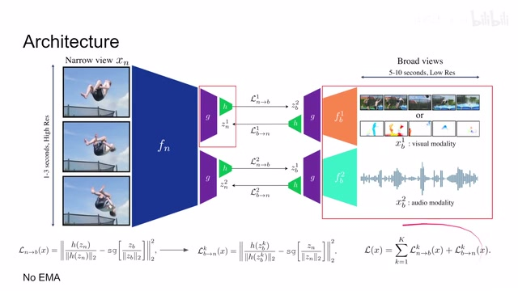
00:03:50–00:03:51 · 画面 00500:03:51–00:04:10 · 画面 006
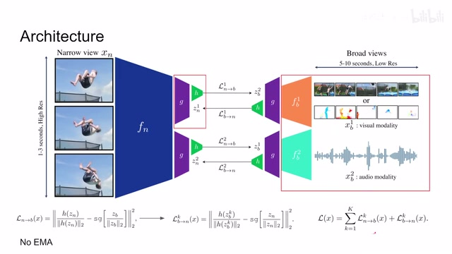
00:03:51–00:04:10 · 画面 00600:04:10–00:04:31 · 画面 007
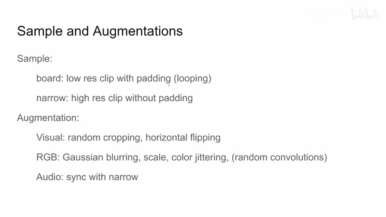
00:04:10–00:04:31 · 画面 007首先是采样的过程对于这些 broad views 它像素取得比较低但是它的时间比较长一般比如说 10 秒这样子因为时间比较长如果你采样的时候视频达不到这个长度你把这个视频循环一遍把前面的几帧填上就可以了这个是 broad views 的产生 narrow views 就相对讲究一点它要首先使用 higher resolution 的 clip 同时因为它这个 clip 比较短也就 1.3 秒
00:04:31–00:04:32 · 画面 008
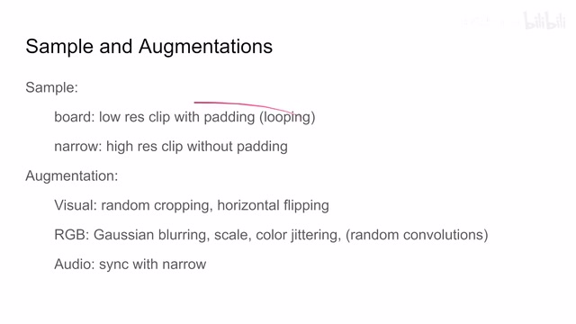
00:04:31–00:04:32 · 画面 00800:04:32–00:05:09 · 画面 009
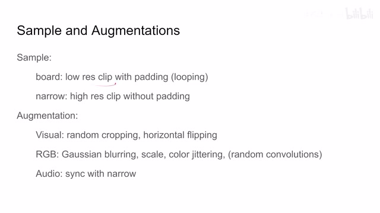
00:04:32–00:05:09 · 画面 009所以你可以在整个视频中不需要 padding 的就直接切出这么一段来作为我们的 narrow views 这个是作者在 sample 上能设计的一个区别至于 Augmentation 由于所有 Visual 的 Augmentation 这种都是常规操作了如果 Visual 是 RGB 的话我们可以再加各种模糊对吧尺度还有颜色的抖动等等包括 Random Convolutions 之前我们也介绍过了就是用一层随机的 Convolution 来给它增强一下同时 Convolution 的 kernel 的尺寸也是不同的作者也研究了而关于 Audio
00:05:09–00:05:10 · 画面 010
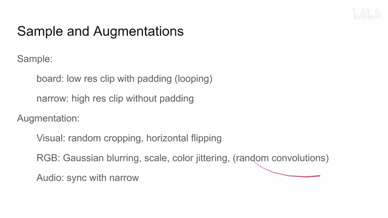
00:05:09–00:05:10 · 画面 01000:05:10–00:05:34 · 画面 011
00:05:10–00:05:34 · 画面 011他呢你这个 narrow 从哪里开始他就从哪里开始但是如果长度不够的话呢他就跟 broad 一样我拿前面的来给他填充进来就可以了那么现在既然这个框架好了我们就来看作者研究了哪些东西吧首先呢是这个 syncing 他的意思呢就是说我们的这个 narrow 和 broad 他们都从一个时间点开始出发你看到呢如果他们 sync 的之后呢他们性能的下降呢是非常明显的哎为什么会这样呢
00:05:34–00:05:36 · 画面 012
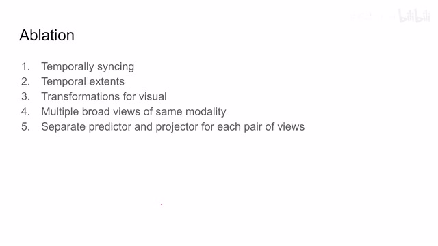
00:05:34–00:05:36 · 画面 01200:05:36–00:05:45 · 画面 013
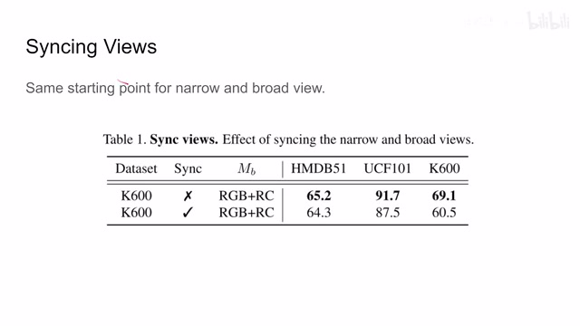
00:05:36–00:05:45 · 画面 01300:05:45–00:05:47 · 画面 014
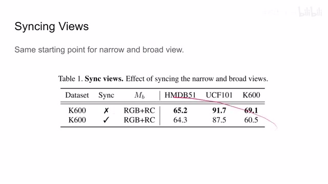
00:05:45–00:05:47 · 画面 01400:05:47–00:06:10 · 画面 015
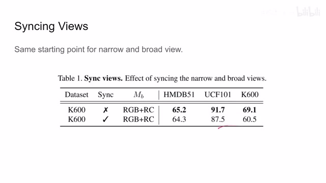
00:05:47–00:06:10 · 画面 015作者说这不意外你想如果 narrow 和 broad sync 之后对于 narrow 来说它就只是单纯的做一个 prediction 那所有的任务都是做 prediction 而从这个 broad 到 narrow 更简单了你只把前面的几帧留下后面几帧都不要就可以了所以这里说这个 syncing 是很不必要的不要用那么再往下我们来看到这个 broad views 其实也就是这个 narrow views 和 broad views 它们相对时间长短的这么一些调整
00:06:10–00:06:19 · 画面 016
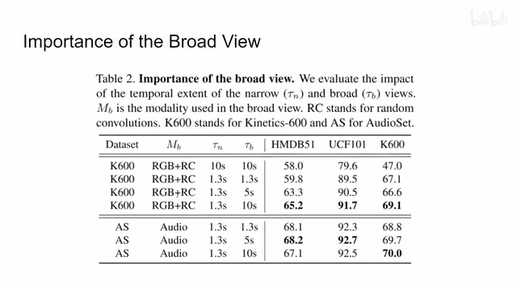
00:06:10–00:06:19 · 画面 016坐这试了各种发现这个 1.3 这个 10 秒这个组合不错啊那就这么着吧那再往下呢这个 visual transformation for broadviews 那本质上来说呢就是我的这个 broadviews 我该用怎么样的这个 augmentation 呢或者说我应该选用什么样的这个 visual 的这个 modality 呢那可以看到呢光流这个效果呢是大部分情况下都 ok 的在这 kinetics 上呢原始的像素呢效果是最好的
00:06:19–00:06:20 · 画面 017
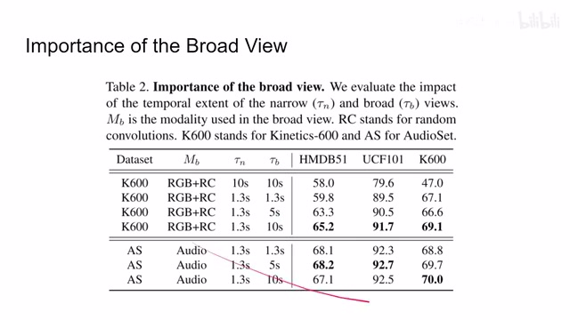
00:06:19–00:06:20 · 画面 01700:06:20–00:06:24 · 画面 018
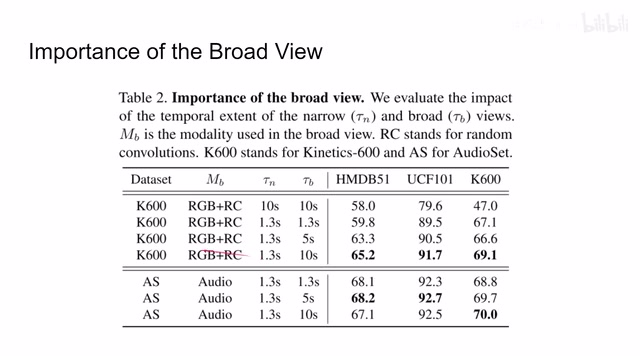
00:06:20–00:06:24 · 画面 01800:06:24–00:06:39 · 画面 019
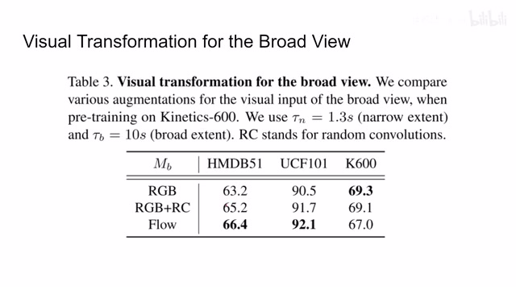
00:06:24–00:06:39 · 画面 01900:06:39–00:06:43 · 画面 020
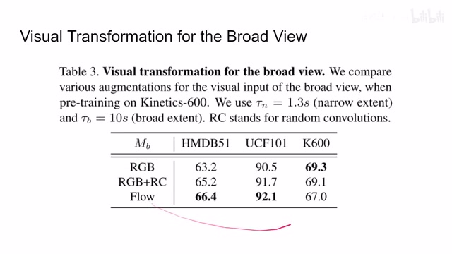
00:06:39–00:06:43 · 画面 02000:06:43–00:06:47 · 画面 021
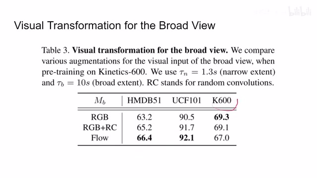
00:06:43–00:06:47 · 画面 021那么再往下的 number of broad views、broad views 很多个能不能为我们带来提升呢？啊答案是可以的，虽然不多，但是可以的。那最后呢，包括这个 weight sharing，就是我们之前强调的这个 broad view 的和 narrow view，他们的 backbone 是不一样，而他们的 projector 和这个 predictor，他们的 backbone 是一样的。那为什么这么设计呢？你看到作者这些都试过了啊，发现这种效果最好。这时候有朋友说了，哎哎，你停一停。
00:06:47–00:06:51 · 画面 022
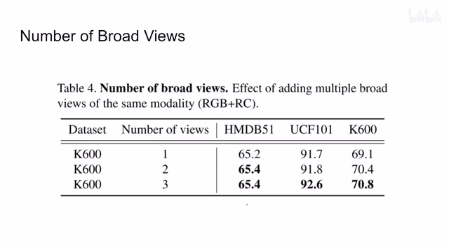
00:06:47–00:06:51 · 画面 02200:06:51–00:06:53 · 画面 023
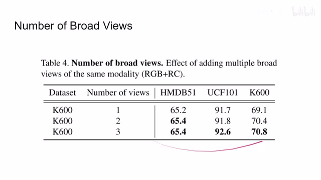
00:06:51–00:06:53 · 画面 02300:06:53–00:06:55 · 画面 024
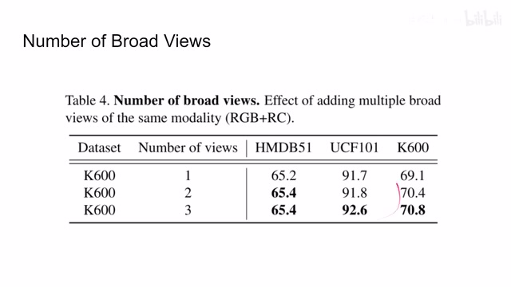
00:06:53–00:06:55 · 画面 02400:06:55–00:07:09 · 画面 025
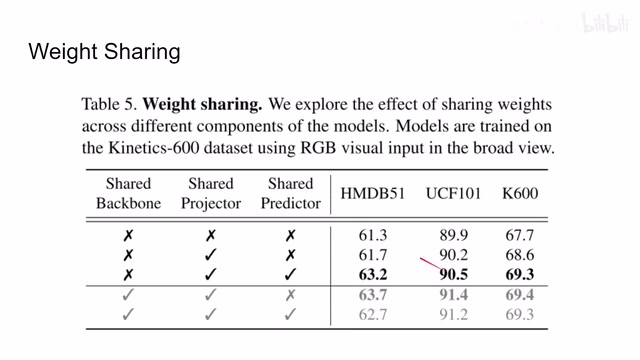
00:06:55–00:07:09 · 画面 02500:07:09–00:07:11 · 画面 026
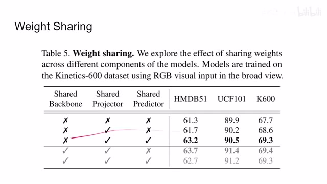
00:07:09–00:07:11 · 画面 02600:07:11–00:07:18 · 画面 027
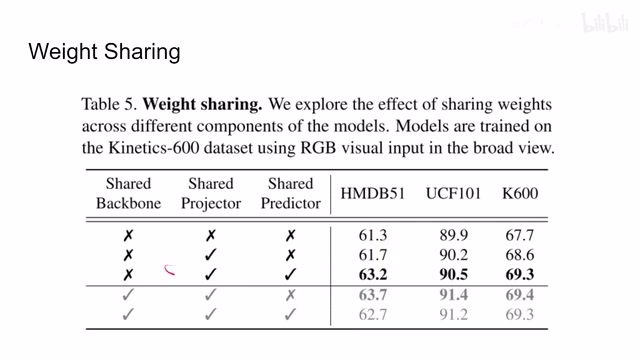
00:07:11–00:07:18 · 画面 027你这个下面这一组啊，他的这个情况都更好吗？对吧？你把这个 backbone share 了，这性能不也挺好的吗？啊，说的都很有道理。但是假如说你处理的是两个 modality，一个是图像，一个是音频，你这个怎么 share 呢？对吧？所以呢，最实际的方法还是这个 share projector 和这个 predictor。那么最后呢，就是作者汇报一些主要的结果了。感兴趣的朋友呢，自己呢可以到原文中查一下。
00:07:18–00:07:21 · 画面 028
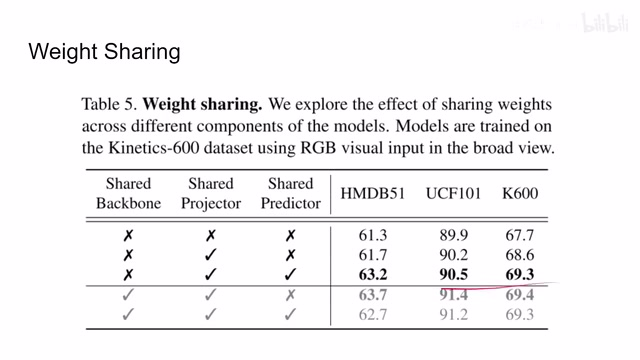
00:07:18–00:07:21 · 画面 02800:07:21–00:07:37 · 画面 029
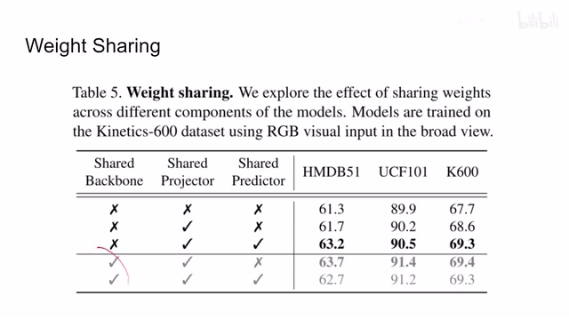
00:07:21–00:07:37 · 画面 02900:07:37–00:07:43 · 画面 030
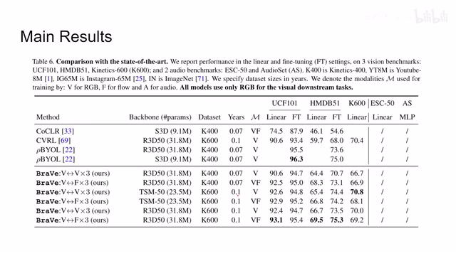
00:07:37–00:07:43 · 画面 03000:07:43–00:07:44 · 画面 031
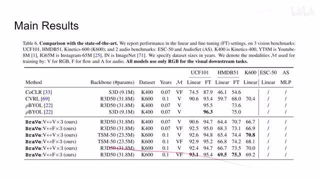
00:07:43–00:07:44 · 画面 031本质上就是作者秀了一下自己的算力，给我们的网络的设计方法呢提供一个参考。这边呢还有这个关于 audio 的这些东西。好的，那么以上就是我对这个论文的简单的一个介绍。感谢您的收看，再见。
00:07:44–00:07:45 · 画面 032
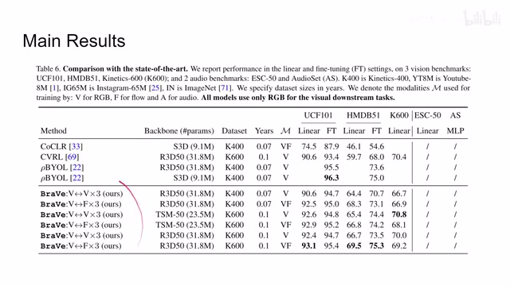
00:07:44–00:07:45 · 画面 03200:07:45–00:07:47 · 画面 033
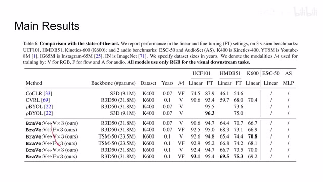
00:07:45–00:07:47 · 画面 03300:07:47–00:07:50 · 画面 034
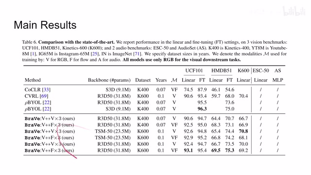
00:07:47–00:07:50 · 画面 03400:07:50–00:07:59 · 画面 035
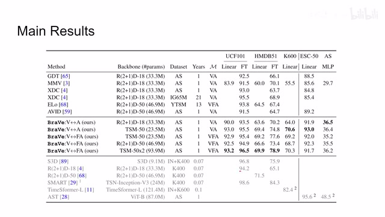
00:07:50–00:07:59 · 画面 035转写与来源说明 · 0 个自动复核提示
保留 19 个原始语音片段，0 个片段触发自动复核提示。提示仅用于定位可能的术语、重复或识别问题，不等于已确认错误。
讲解画面为源视频截图（640×360），不是可编辑 PPT 文件。全片按每秒 2 帧扫描内容变化，逐步展开页保留；连续动画保留代表画面。清晰度受源视频限制。
原视频：paper/合集_2026-10-16_表征学习/[论文简析]Broaden Your Views for Self-Supervised Video Learning[2103.16559].mp4
SHA-256：3f74eb4c322a331e5ce330c3f8462f1fff8b50004f61687430e6aeafc19f5301
全文按视频语音与画面制作。原论文可从上方链接下载；完整资料包保留全文、原始逐字稿、字幕和校对记录。